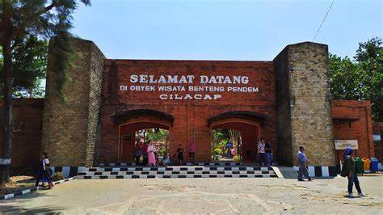

Selamat datang di halaman Sejarah Wisata kami. Di lokasi, tidak hanya makanan saja, tetapi ada wisata yang pengunjungnya cukup ramai setiap weekend.
Benteng Pendem atau Kusbatterij op de Landtong te Tjilatjap, merupakan benteng pertahanan milik pemerintah Hindia Belanda. Benteng Pendem terletak di tepi pantai Cilacap, Jawa Tengah. Sebelum benteng ini dibangun, pada waktu itu sebuah kapal Inggris Royal George pernah singgah di Pulau Nusakambangan hanya untuk mengambil air, hal ini membuat Belanda khawatir jika sewaktu-waktu ada serangan musuh. Maka dari itu, pemerintah Hindia Belanda membangun markas di tepi pantai Cilacap.
Selain itu juga, untuk menangkal pihak-pihak lain yang berusaha menguasai kota Cilacap, Benteng Pendem dibangun karena menurut pemerintah Hindia Belanda, kota Cilacap memiliki letak geografis yang strategis dan cocok untuk dijadikan kota pelabuhan. Di mana menjadi sebuah kota pelabuhan sebagai pintu gerbang jalur perekonomian dari wilayah Banyumas ke Kerajaan Belanda. Masyarakat Jawa menyebut Benteng Kusbatterij op de Landtong te Tjilatjap dengan sebutan benteng “pendem” karena letak benteng yang terpendam atau tertimbun dengan tanah. Benteng Pendem dibangun pada tahun 1861 dan selasai tahun 1879 dengan luas wilayah 10,5 ha.
Tahun 1950 setelah Kemerdekaan Indonesia, Benteng Pendem tidak difungsikan sama sekali selama 2 tahun. Seiring berjalannya waktu, pada tahun 1952 Tentara Nasional Indonesia (TNI) Banteng Loreng atau Resimen Para Komando Angkatan Darat (RPKAD) Kesatuan Jawa Tengah mengambil alih Benteng Pendem dan menjadikan tempat berlatih pertempuran dan pendaratan laut sampai tahun 1965. Monumen Peluru didirikan di gerbang utama Benteng Pendem oleh RPKAD atau sekarang adalah KOPASSUS (Komando Pasukan Khusus) untuk memberi tanda bahwa RPKAD pernah menggunakan Benteng Pendem sebagai markas mereka. Hingga kini, Benteng Pendem menjadi tempat pariwisata yang dikunjungi para wisatawan, baik dari domestik maupun mancanegara. Selain menjadi situs cagar budaya, Benteng Pendem juga memberi dampak perekonomian bagi warga setempat untuk menjual berbagai macam cendera mata. “Di sekitar area benteng terdapat lebih dari 50 ekor rusa yang dibiarkan begitu saja di dalam area benteng, rusa-rusa ini didatangkan dari Teluk Penyu yang awalnya hanya berjumlah 5 ekor.”